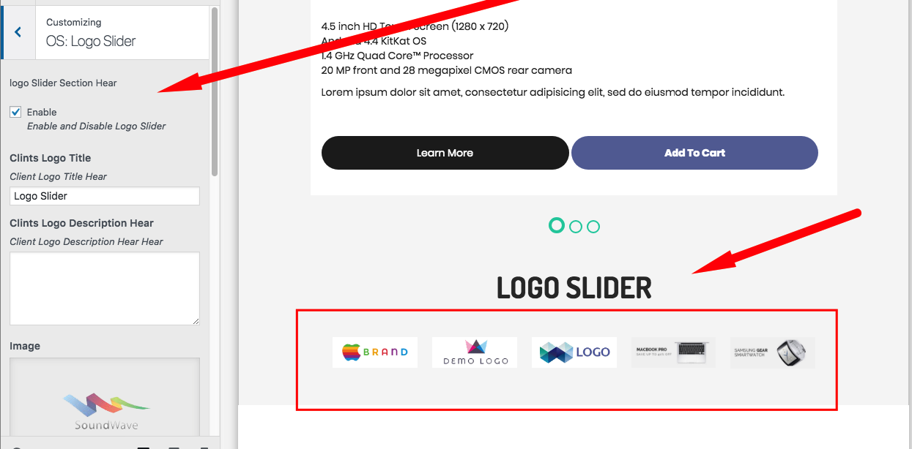
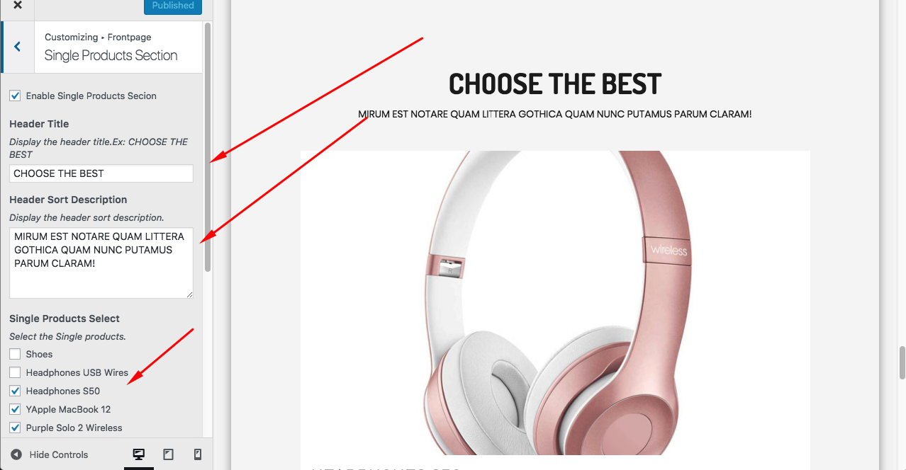
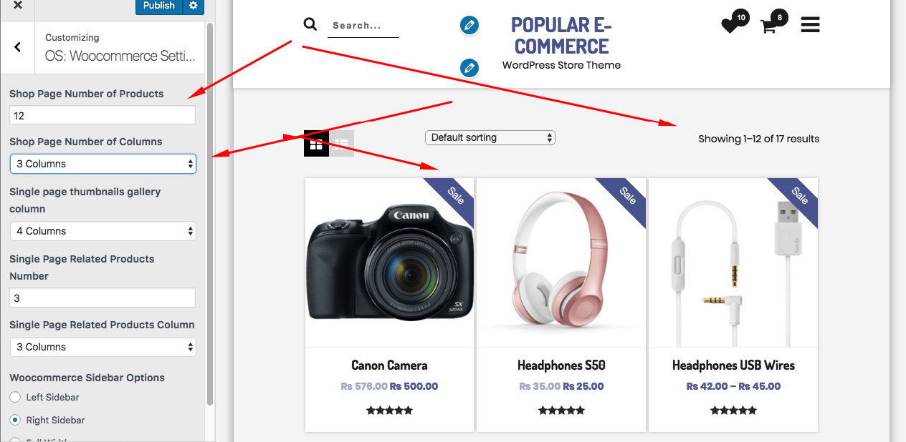

Install Theme
-
Get Started
Thank you very much for choosing our theme. We truly appreciate and really hope that you'll enjoy our theme! If you like this theme, Please support us by rating us 5 stars. Thanks You.
Popular eCommerce - The best WordPress theme for online store
It comes with a lot of great features that would take you months to develop. It is fully responsive, it looks stunning on all types of screens and devices. Including easy to set up for Home Page Widget Section etc.
Theme is fully based on WoCommerce
-
Theme Installation
There are two methods to install Popular eCommerce WordPress Theme. You may either upload the zipped theme file using the WordPress theme installer (Recommended), or you can upload the unzipped theme folder via FTP (Advanced).
Note: Before you install this theme make sure you have ostore theme installed. If you don't have then child theme needs your approval to install ostore theme.
Method 1 ( Recommended): Install Using the WordPress Theme Installer
- 1. Log into your WordPress site and opens the Admin Panel. 'Admin Panel' .
- 2. Go to Appearance > Themes in the WordPress Dashboard.
- 3. Click on the Upload button.
- 4. Click Install Now.

Method 2: Install Using File Transfer Protocol (FTP)
- 1. Unzip “popular-ecommerce.zip” file on your computer
- 2. Login using FTP client to access your host web server.
- 3. Locate the wp-content folder in your WordPress install files.
- 4. Upload the un-zipped oStore folder into the: wp-content/themes folder.
- Note: If you don't have ostore theme install then popular-ecommerce install parent theme (ostore)
Activate the theme
- 1. Log in to the WordPress Admin Panel.
- 2. Go to Appearance > Themes in the WordPress menu.
- 3. Hover over the theme thumbnail and click the Activate button..
-
Plugins Installation
Plugin Installing Method
- 1. Log in your WordPress site and open the Admin Panel.
- 2. Go to apprerance and click on install plugins (recommended)
- 3. Now select all plugins or what you want to install
- 4. And install pluigns and active theme
{kind=link}
{kind=link}
Home Page Settings
- Slider Settings
-
OS: Layout
This is for theme layout
- Theme Layout
- Default
- Box
- Sidebar Layout
- Archive Layout
- Single Page
- Page Sidebar
- Theme Layout
-
OS: Logo Slider
Show your brand with slider
You can enable an disable settings
Enter Title or you can leave blank
You can write description or leave blank
You can add or remove multiple images

-
OS: Front Page Single Product Slider
You can display multiple product in slider format which is most important for customer

-
WooCommerce Settings
This settigns for woocommerce shop page and single page
- Pagination
- Column
- Single Page Slider
- Single Page Related Product Column

-
Home Page Widget
Widget settigns for home page
- 1. OS: WooCommerce Cagtegory Collection
- 2. OS: Tab Product Slider
- 3. OS: Hot Deal Product
- 4. OS: Home Banner
- 5. OS: Single Category Product
- 6. OS: HLP Product( Hot Deal Products)
- 1. WooCommerce Category Collection
- 2. OS: Tab Product Slider
- 2. OS: HLP


{kind=link}
{kind=link}
Menu Settings
-
Menu Settings
By default, the menus will fallback to Pages. That means just after activation of the theme, you will see all the pages as menus. If you want selective menus with combination of links, pages, categories then custom menu is what you should be looking for.
1.Log into your WordPress site and opens the Admin Panel.
2.Go to Appearance > Menus in the WordPress menu.
3.Click on Create a new menu link.
4.Give a name to your menu in Menu Name and click Create Menu button.
5.Now choose the pages, categories, custom links from the left side of your screen by selecting the checkbox and click on Add Menu.
6.Choose the menu Theme Location per as requirement.
7.Click Save Menu after adding required pages, categories in the menu.

Support
-
Support
The team at Tea Theme are always happy to help you with any questions or recommendations you have about the popular ecommerce. If you need any help or support please contact us through the forum or
Support Email: themerelic@gmail.com